# 课程内容 5-8 章复习
# ADT
所谓 ADT - 抽象数据类型，强调作用于数据之上的操作，并不关心数据具体是怎么存储的。例如我们的字母集合，只对它定义了操作，它的元素到底是怎么存的？用户不需要知道。可以是字符串，可以是字符数组，可以是哈希表，可以是红黑树……
・ADT 可以有 4 种操作：
• ①构造器 creator，输入一些其它类型的对象，创建一个该 ADT 对象。例如创建一个新集合 new () 或者现实中的构造函数。
• ②生产器 producer，通过该 ADT 的旧对象，创建一个该 ADT 的新对象，例如计算当前集合与 S 的 交集的方法 ins (S)。
• ③观察器 observer，通过该 ADT 本身的数据以及传入参数，计算得到其它类型的值。例如检查 集合里是否有 x 的方法 find (x)。
• ④变值器 mutator，作出 “修改 ADT 内部数据” 的行为，是可变对象与不可变对象的本质区别！例 如将 x 加入集合并返回加入 x 后的集合大小的方法 add (x)。
注： ADT 中的变值器不一定返回 void
# 类与接口
接口相当于规定了 ADT 所需的未实现的操作（方法），这是用户所关注的。
类真正地在代码层面实现了接口规定的 ADT 操作，并且实现了 ADT 内部的数据存储
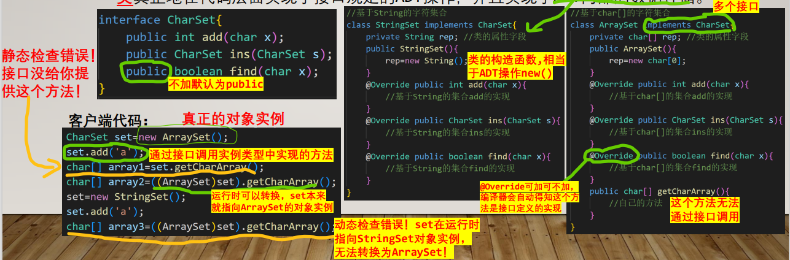
接口实际上可以通过 default 或者 static 直接编写方法实现
例一：不希望客户端得知具体类名，但客户端需要创建实例对象 基于 static 的工厂方法
例二：想为 ADT 增加一个方法，但又不希望改变已经实现的具体类 在接口中就已实现默认操作的 default 方法
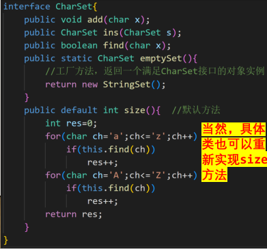
客户端代码：
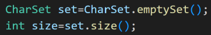
# 方法规约
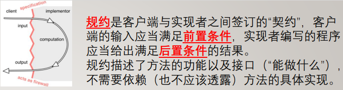
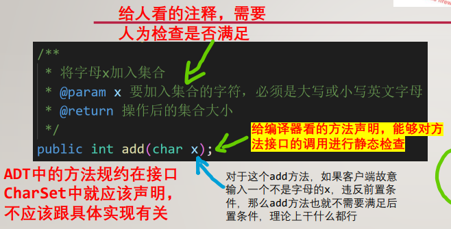
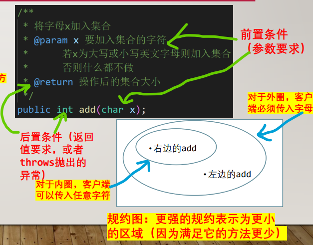
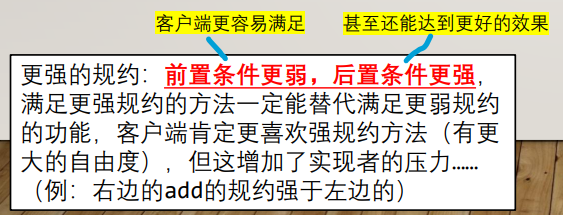
# AF/RI/rep
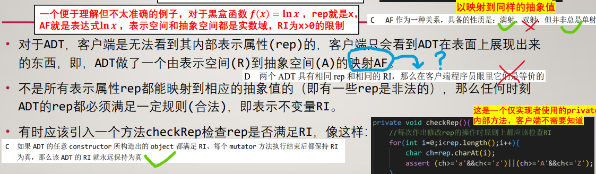
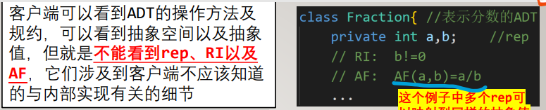
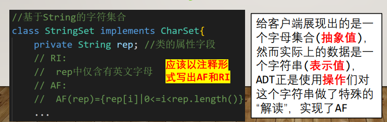
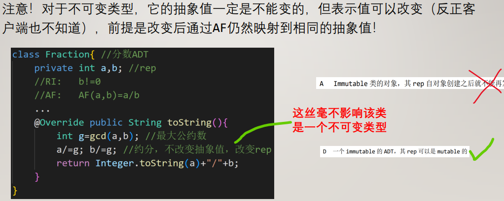
# 表示独立性与表示泄露
表示独立性是指，客户端使用 ADT 时无需考虑（也不应该知道，更不应该直接访问到）其内部如何实现，ADT 内部表示的变化不应影响外部的 spec 和客户端。
如果 ADT 不幸地让客户端得到了自己的内部表示（可变对象）的引用，那么客户端就可以不通过 ADT 的操作，而可以通过非法后门修改 ADT 的内部表示，并产生泄露
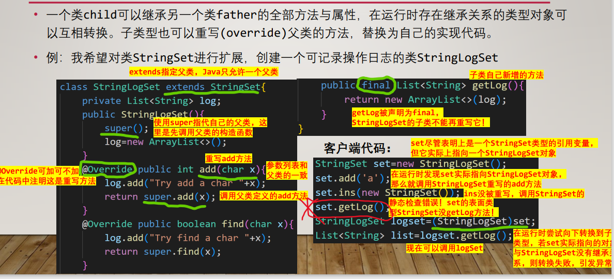
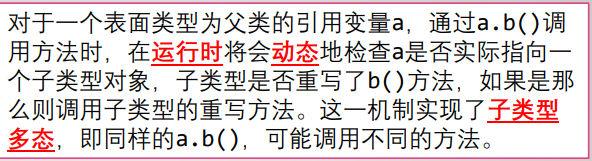
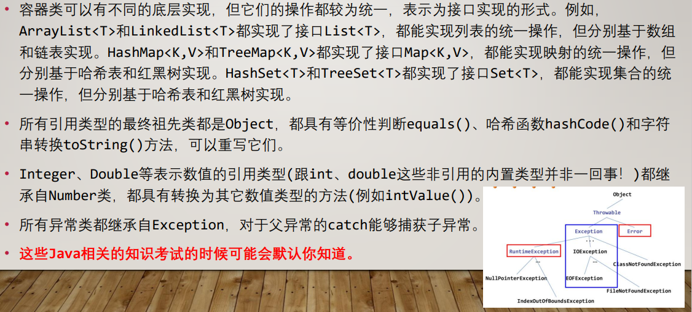
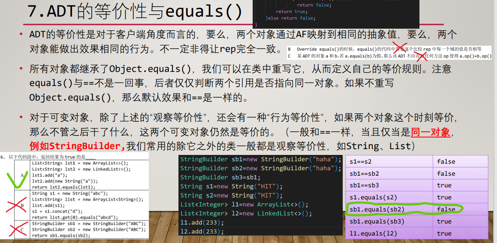
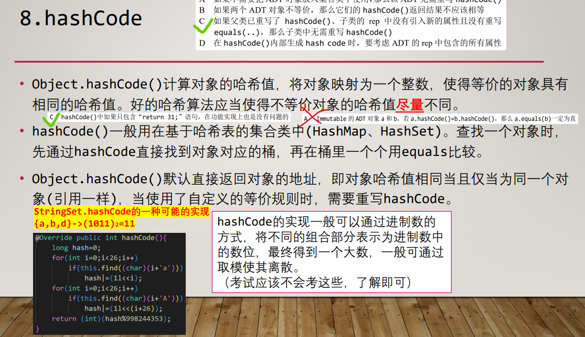
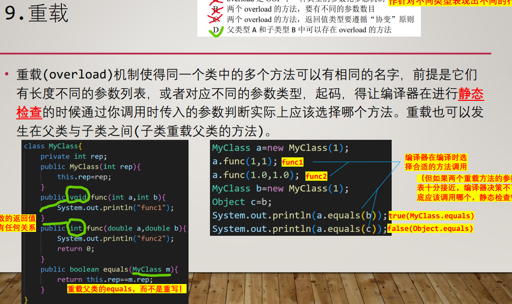
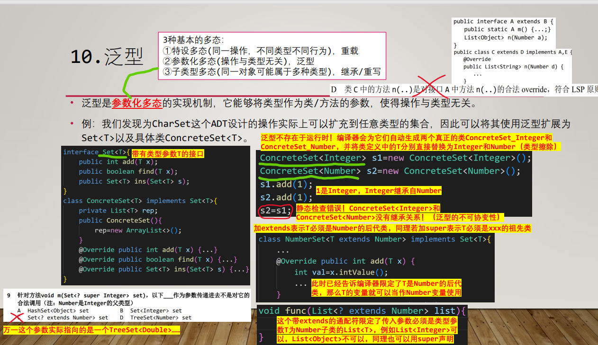